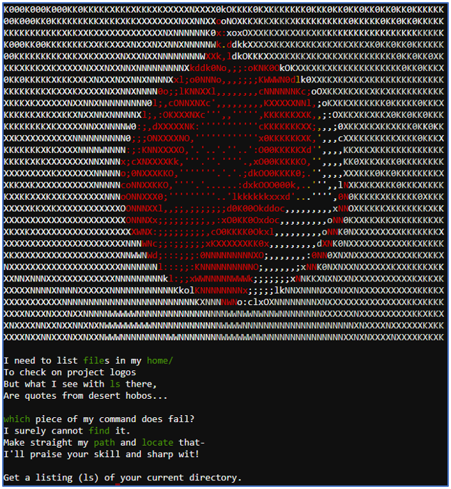

Linux Path¶
Challenge¶
The initial dialog with SugarPlum Mary:
SugarPlum Mary
Oh me oh my - I need some help!
I need to review some files in my Linux terminal, but I can't get a file listing.
I know the command is ls, but it's really acting up.
Do you think you could help me out? As you work on this, think about these questions:
1. Do the words in green have special significance?
2. How can I find a file with a specific name?
3. What happens if there are multiple executables with the same name in my $PATH?
The hint from our badge:
Linux Path From: SugarPlum Mary Green words matter, files must be found, and the terminal's $PATH matters.
The banner page from the terminal challenge:
Solution¶
Before we solve the challenge it is useful to answer the third question above.
To understand why an unqualified ls command was using the wrong version, we need to look at the PATH. We can do this with the following command:
echo $PATH
We obtained the following output:
/usr/local/bin:/usr/bin:/bin:/usr/local/games:/usr/games
The PATH determines the folders in which the system searches for commands when they are unqualified (when typed in without a full path). Whatever is in /usr/local/bin is executed first, followed by /usr/bin, followed by /bin, and so on.
The simplest way to solve this challenge is to use the find command to look for instances of ls. For example:
find / -name "ls" -type f
We get the following output:
/usr/local/bin/ls
find: '/root': Permission denied
find: '/var/cache/apt/archives/partial': Permission denied
find: '/var/cache/ldconfig': Permission denied
find: '/var/lib/apt/lists/partial': Permission denied
/bin/ls
find: '/proc/tty/driver': Permission denied
find: '/proc/1/task/1/fd': Permission denied
find: '/proc/1/task/1/fdinfo': Permission denied
find: '/proc/1/task/1/ns': Permission denied
find: '/proc/1/fd': Permission denied
find: '/proc/1/map_files': Permission denied
find: '/proc/1/fdinfo': Permission denied
find: '/proc/1/ns': Permission denied
find: '/proc/6/task/6/fd': Permission denied
find: '/proc/6/task/6/fdinfo': Permission denied
find: '/proc/6/task/6/ns': Permission denied
find: '/proc/6/fd': Permission denied
find: '/proc/6/map_files': Permission denied
find: '/proc/6/fdinfo': Permission denied
find: '/proc/6/ns': Permission denied
find: '/etc/ssl/private': Permission denied
This shows that there are two instances of ls on our system. We then execute ls by using it’s full path. For example:
/usr/local/bin/ls
This produces the following output:
This isn't the ls you're looking for
We then try:
/bin/ls
Success!. The following output was displayed:
' ' rejected-elfu-logos.txt
Loading, please wait......
You did it! Congratulations!
Hints¶
SugarPlum Mary provides the following hint in her dialog after solving the terminal challenge:
SugarPlum Mary Oh there they are! Now I can delete them. Thanks! Have you tried the Sysmon and EQL challenge? If you aren't familiar with Sysmon, Carlos Perez has some great info about it. Haven't heard of the Event Query Language? Check out some of Ross Wolf's work on EQL or that blog post by Josh Wright in your badge.
The following hints were unlocked in our badge:
Event Query Language From: SugarPlum Mary EQL Threat Hunting
Sysmon From: SugarPlum Mary Sysmon By Carlos Perez